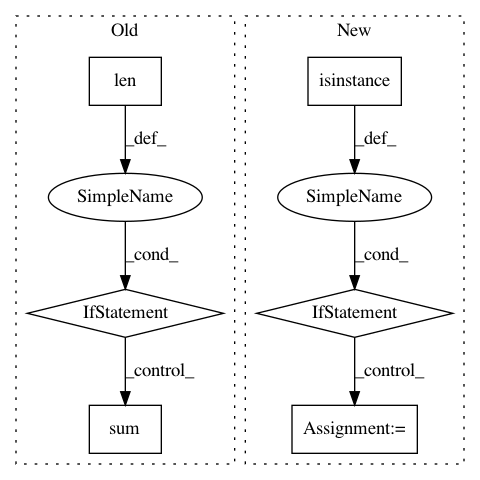

f4bc57459e575c7111f50a2744c8054d3d43f0d5,deepchem/hyper/gaussian_process.py,GaussianProcessHyperparamOpt,hyperparam_search,#GaussianProcessHyperparamOpt#Any#Any#Any#Any#Any#Any#Any#Any#Any#Any#,28
Before Change
// Number of parameters
n_param = len(hp_list_single)
if len(hp_list_multiple) > 0:
n_param = n_param + sum([hp[1] for hp in hp_list_multiple])
// Dummy names
param_name = ["l" + format(i, "02d") for i in range(20)]
param = dict(zip(param_name[:n_param], param_range))
After Change
// Compute number of different params
n_param = 0
for val in params_dict.items():
if isinstance(val, list):
n_param += len(val)
else:
n_param += 1
// Dummy names
param_name = ["l" + format(i, "02d") for i in range(20)]
param = dict(zip(param_name[:n_param], param_range))
def f(l00=0,
In pattern: SUPERPATTERN
Frequency: 3
Non-data size: 6
Instances
Project Name: deepchem/deepchem
Commit Name: f4bc57459e575c7111f50a2744c8054d3d43f0d5
Time: 2020-07-02
Author: bharath@Bharaths-MBP.zyxel.com
File Name: deepchem/hyper/gaussian_process.py
Class Name: GaussianProcessHyperparamOpt
Method Name: hyperparam_search
Project Name: tensorly/tensorly
Commit Name: 55ed12ebcce6cd71945fef8387767484c80abc2c
Time: 2021-03-04
Author: taylorpatti@g.harvard.edu
File Name: tensorly/metrics/entropy.py
Class Name:
Method Name: vonNeumann_entropy
Project Name: deepmipt/DeepPavlov
Commit Name: 0066f83bc6f9f3861119db2593c3007796d2056c
Time: 2018-08-30
Author: mary.vikhreva@gmail.com
File Name: deeppavlov/metrics/bleu.py
Class Name:
Method Name: bleu